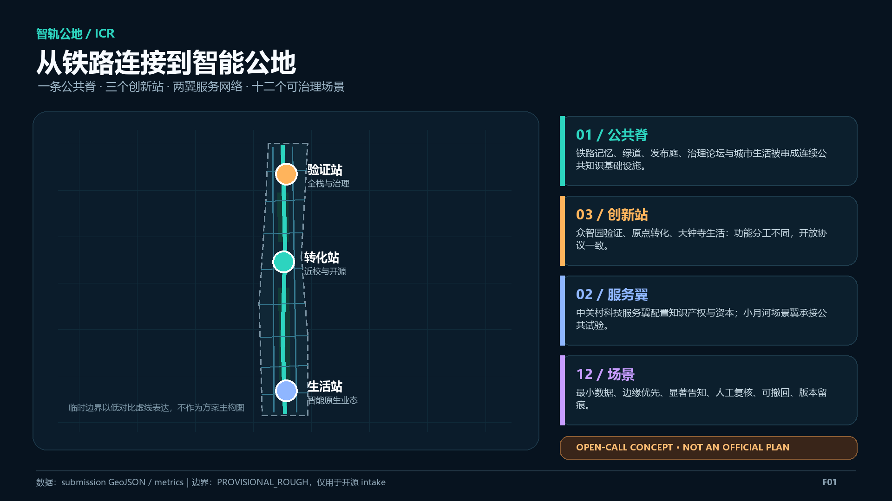
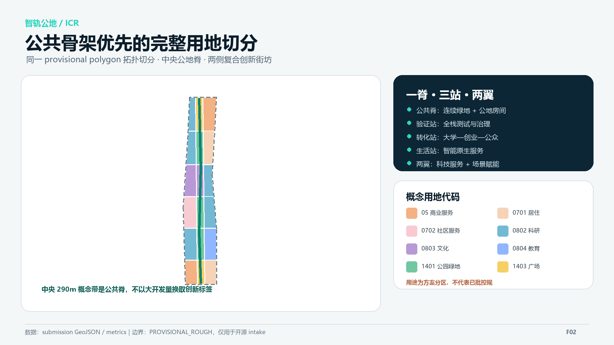
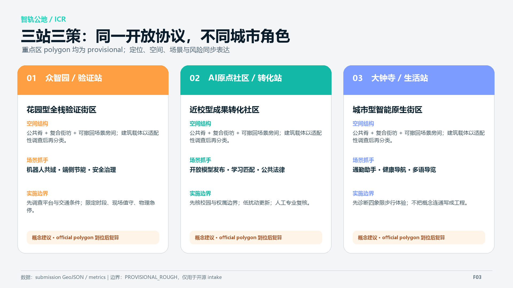
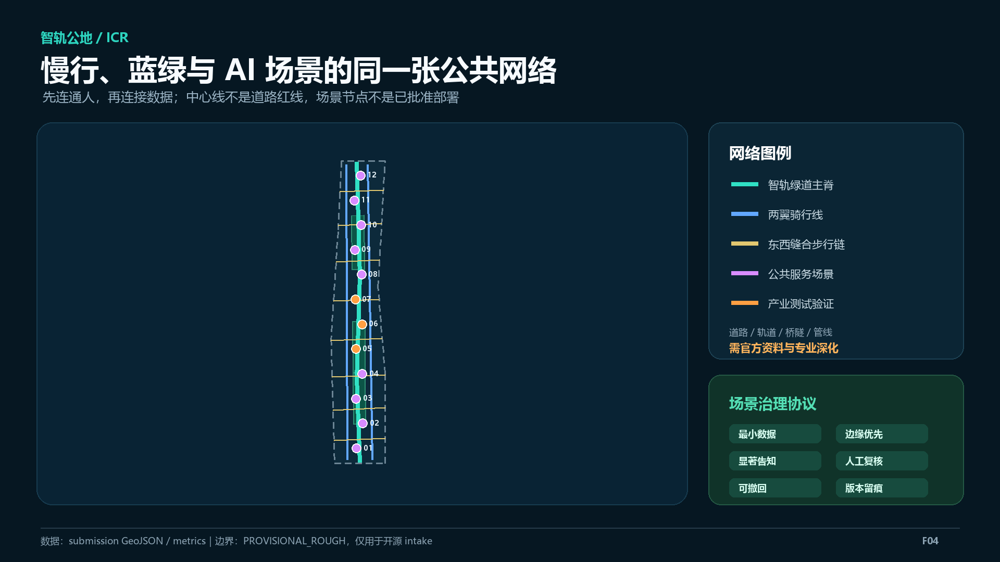
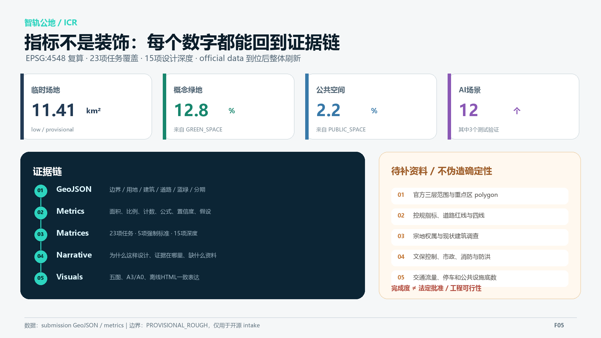

总览地图

核心指标
三层范围 · 用地分区
统筹研究回答产业与区域协同；总体设计形成完整拓扑切分；三个重点区域形成差异化概念详细设计。临时边界只作为低对比约束。

重点区域

交通慢行 · 蓝绿公共空间
南北绿道、两翼骑行与八条东西缝合步行链构成概念中心线网络；不表达道路红线、轨道线位或工程可行性。

任务覆盖 · 自检状态
23 / 23
公告与 agent 必答任务已映射
公告与 agent 必答任务已映射
15 / 15
设计深度项完整回应
设计深度项完整回应
5 + 1
五项强制标准，一项资料缺口
五项强制标准，一项资料缺口
自检状态以 self_check.json 与仓库 CI 为准；PASS 只代表具备进入社区机器审查的基础，不代表法定批准或工程可行性。

来源
- 官方资格预审公告：任务、范围文字与面积约值
- 清权智能体任务书：六项任务与边界条款
- 住建部与自然资源部公开标准：方法与分类
- 仓库 provisional boundaries：仅用于 intake
- 全球案例官方页面：仅作背景参照
假设
官方 polygon 缺失控规指标缺失道路红线缺失建筑与权属底册缺失文保与市政条件缺失
official data 到位后，统一替换边界、重切用地、裁切全部图层、复算指标、重画五图与 PDF，再执行全链自检。